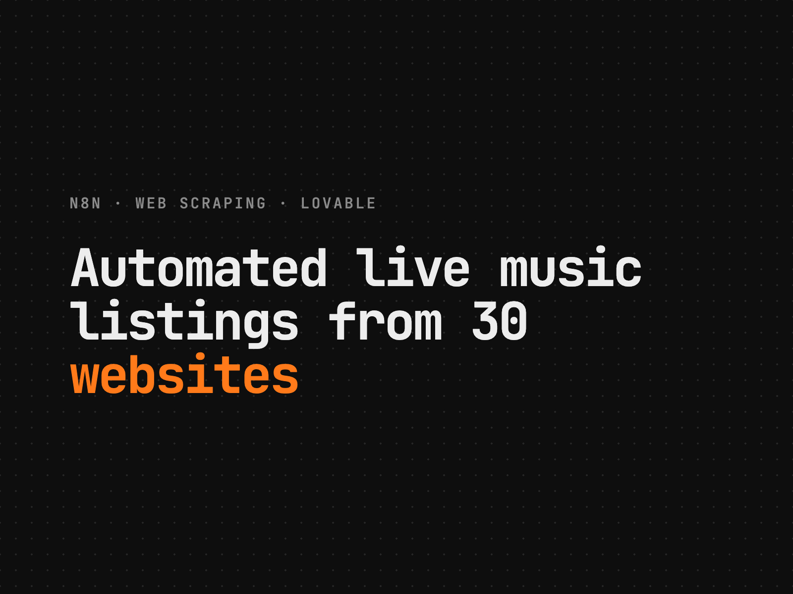

Case study · Automation
Live Music Scraping and Events Platform
A US company wanted the live music at bars and terraces from about 30 websites in one place. I built the scrapers, a web app where the team sees every event and a weekly email with the next week's events.

- Client
- Phrogg
- Year
- 2025
- Type
- Automation
Context
A company in the United States wanted to know about every live music night at bars and terraces. The information was public, but spread across about 30 websites, each with its own format.
Checking 30 sites by hand every week is the kind of job nobody keeps doing for long.
What I built
Three pieces that work together:
- An n8n system that scrapes all the websites and turns what it finds into one list of events.
- A web app, built with Lovable, where the team sees every event in one place.
- An internal newsletter that emails the team the following week's events, every week.
How I worked
I split the problem in three: getting the data, showing it and sending it. Each piece does one thing and can be changed without touching the other two.
The web app is an internal tool for the team, built with Lovable.
Stack
- n8n
- The scrapers and the weekly email.
- Lovable
- The internal web app.